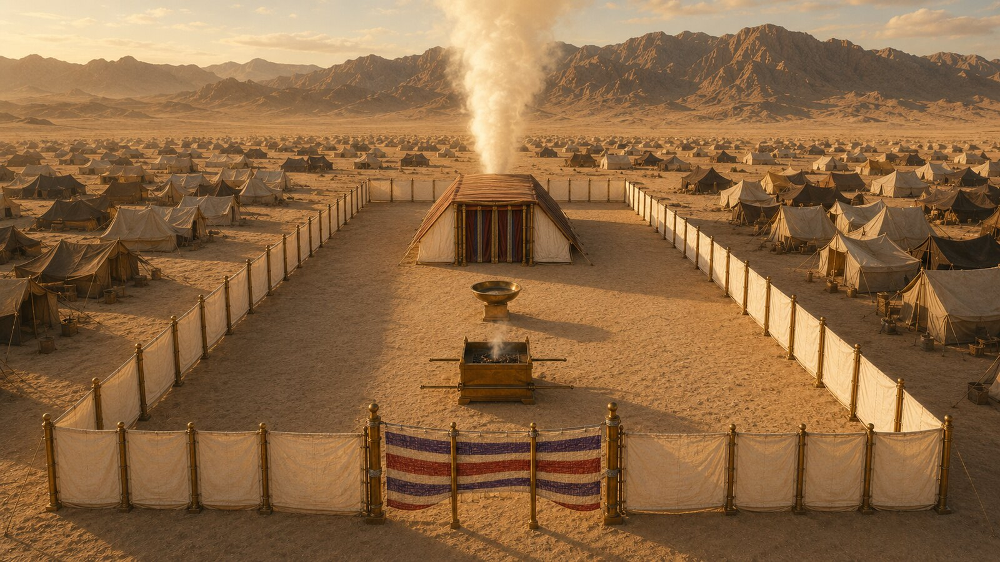

Click any piece of furniture on the floor plan below to read what it was, where it stood, and what it pictured. The whole arrangement — gate, altar, laver, lampstand, table, incense, veil, ark, mercy seat — was given to Moses on the mountain as the pattern of the things in the heavens (Heb 8:5).

Click any piece to read its details. The whole pattern was shown to Moses on Sinai (Heb 8:5).
Click any piece of furniture on the floor plan to read what it was, where it stood, and what it pictured. Or press Walk the priest’s approach to see the seven-stop journey from the gate to the ark — the path every offering followed, and the path Christ fulfilled in His one offering.
Hebrews is the New Testament commentary on the Tabernacle. Hebrews 8–10 treats the whole structure, its furniture, and its priesthood as a copy and shadow of the heavenly things, of which Christ is the substance. The high priest’s yearly entry into the Holy of Holies on the Day of Atonement (Lev 16) is the type; Christ’s once-for-all entry into the heavenly sanctuary with His own blood is the fulfillment (Heb 9:11–12).
Five times in Exodus 25–26 the Lord tells Moses: see that you make it after the pattern which was shown you on the mountain. Hebrews picks up this exactness: see, He says, that you make all things according to the pattern which was shown you on the mountain (Heb 8:5). The dimensions, the materials, the arrangement — none of it was arbitrary. Each piece pictures something.
The order of approach — gate, bronze altar, bronze laver, holy place, veil, ark — is itself the gospel sequence. A worshipper could not skip ahead. The altar (death) came before the laver (cleansing) which came before the holy place (priestly fellowship) which was separated from the ark (God’s presence) by a veil. When Christ died, the veil of the temple was torn in two from top to bottom (Matt 27:51) — the way into the holiest opened.
Not every detail of the Tabernacle was explicitly identified by the New Testament as a type of something specific. Hebrews itself names some pieces and is reserved about others. Where Scripture explicitly draws the line, the connection is firm; where it doesn’t, the reader should hold the suggestion lightly. This study follows that restraint: the typologies named below are the ones the New Testament names.
The Day of Atonement ritual (Lev 16) walks through the Tabernacle from the bronze altar, past the veil, to the mercy seat — once a year. Press The Day of Atonement above to walk that path on this floor plan, step by step. The full ritual, with its fulfillment in Christ, is traced in the Day of Atonement spoke.